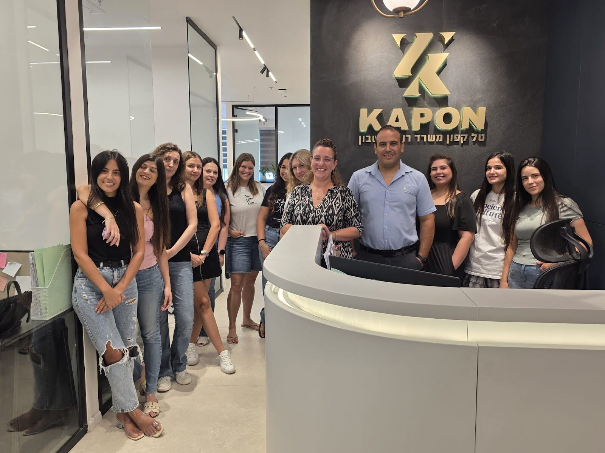
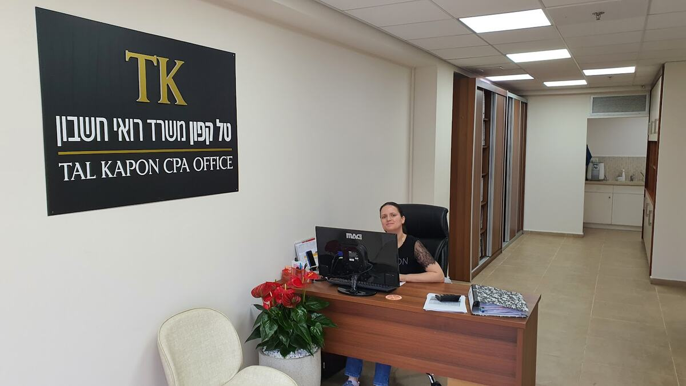
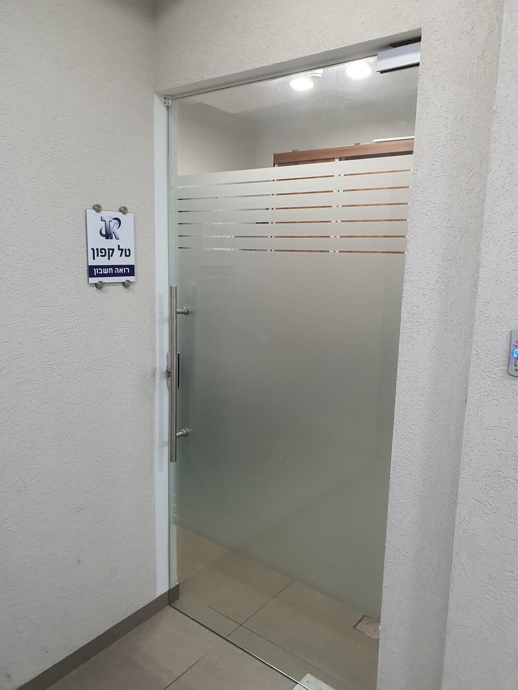

ליווי העסקRunning the books
הכנסות, הוצאות וספרים, לאורך כל השנה.Income, expenses and books, all year round.
קונספט לדוגמה שנבנה עבור טל קפון רואה חשבון · זה אינו האתר הרשמי של העסקA sample concept built for Tal Kapon CPA · This is not the business’s official website
טל קפון, רואה חשבון, וצוות המשרד שלו ברחוב ש״י עגנון 16, קריית מוצקין.Tal Kapon, CPA, and his office team at 16 Shai Agnon St, Kiryat Motzkin.

צוות שלם במשרד אחד, ברחוב ש״י עגנון בקריית מוצקין.A whole team in one office on Shai Agnon St, Kiryat Motzkin.
״טל והצוות מקצוענים ברמה הכי גבוהה שיש״“Tal and the team are professionals of the highest level there is”

בעלי עסקים ועצמאים: הספרים, ההוצאות והעבודה מול הרשויות.Business owners and the self-employed: the books, the expenses and the dealings with the authorities.
הכנסות, הוצאות וספרים, לאורך כל השנה.Income, expenses and books, all year round.
כל הוצאה בסעיף שלה.Every expense in its place.
הטפסים, הדוחות והמועדים.The forms, the reports, the deadlines.
ספרה אחרי ספרה.Figure after figure.
השנה כולה, בדוח אחד.The whole year, in one report.
יש שאלה? שולחים לטל הודעה.Got a question? Send Tal a message.
משרד רואי חשבון מקצועי ברמה הכי גבוהה שפגשתי. תמיד זמינים, אדיבים וסבלניים, עם תחושה אמיתית שיש על מי לסמוך. ראיתי ועבדתי עם לא מעט רואי חשבון לאורך השנים, וכאן באמת מרגישים את ההבדל- גם בידע, גם ביחס וגם בירידה לפרטים. ממליצה בלב שלם.
A CPA office professional at the highest level I’ve met. Always available, courteous and patient, with a real sense that there’s someone to rely on. I’ve seen and worked with quite a few accountants over the years, and here you really feel the difference – in knowledge, in attitude and in attention to detail. I recommend them wholeheartedly.
רואה חשבון הכי טוב שהיה לי מסודר, מדויק, תמיד זמין לכל שאלה עוזר בכל הקשור להוצאות הכל נעשה באהבה ובכיף גדול אין כמו המשרד של טל
The best accountant I’ve had Organised, precise, always available for any question Helps with everything to do with expenses Everything done with love and great fun There’s nothing like Tal’s office
מומלץ בחום! טל וכל הצוות מקצוענים, השירות מעולה, תמיד זמינים לכל שאלה או בקשה. אני מרגישה שאני בידיים הכי טובות שיש.
Highly recommended! Tal and the whole team are professionals, the service is excellent, always available for any question or request. I feel I’m in the best hands there are.
כל בעל עסק צריך רואה חשבון מצויין, טל והצוות מקצוענים ברמה הכי גבוהה שיש נותנים שירות מעולה עונים על כל השאלות ופותרים את אי הוודאות שיש לכל בעל עסק בעולם הרשויות והמיסים. תעשו לעצמכם טובה ושימו את עצמכם בידיים טובות!
Every business owner needs an excellent accountant. Tal and the team are professionals of the highest level, give excellent service, answer every question and clear up the uncertainty every business owner has in the world of authorities and taxes. Do yourselves a favour and put yourselves in good hands!
פעם חשבתי שלהעזר ברואה חשבון זה לזרוק כסף מהעסק לפח. בהמלצת קרוב משפחה עברתי למר קפון והבנתי שצדקתי! מכיוון שלא הייתי לקוח אצל רואה חשבון שבאמת דואג ללקוחותיו. לשמחתי לא רק שטל הוכיח לי שטעיתי (בבחירת רואי חשבון עד עכשיו)אלה עזר לי לחסוך בהוצאות ולהגדיל בכך הכנסות . מנצל את ההזדמנות להודות לקרוב המשפחה שדחף אותי לעשות את ההחלטה הנכונה לי ולעסק.
I used to think hiring an accountant was throwing the business’s money in the bin. On a relative’s recommendation I moved to Mr Kapon and realised I had been right! Because I had never been a client of an accountant who truly looks after his clients. Happily, not only did Tal prove me wrong (in my choice of accountants until now), he helped me save on expenses and so grow income. I’m taking the chance to thank the relative who pushed me to make the right decision for me and the business.
ש״י עגנון 16, קריית מוצקין. מחפשים את השלט של טל קפון.16 Shai Agnon St, Kiryat Motzkin. Look for Tal Kapon’s sign.

ראשון עד חמישי, 8:00–17:30. בשישי ובשבת סגור.Sunday to Thursday, 8:00–17:30. Closed Friday and Saturday.
רחוב ש״י עגנון 16 בקריית מוצקין.16 Shai Agnon St in Kiryat Motzkin.
הודעת וואטסאפ או שיחה ל-052-449-2262.A WhatsApp message or a call to 052-449-2262.